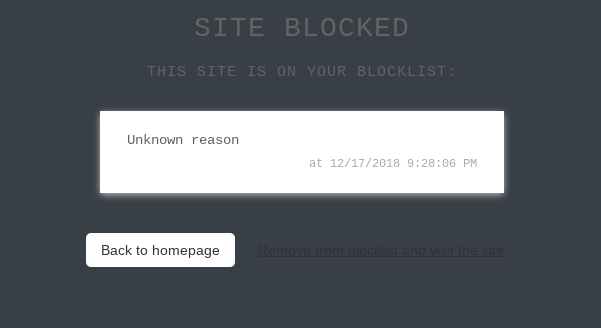

ALLE-POSTS
Blocken von Seiten und Benutzern
In ZeroNet kann man Benutzer oder auch gleich ganze Zites (so nennt man in ZeroNet die Webseiten) blocken.
Bei den gesperrten Benutzern handelt es sich oft um Spammer, die das Netz mit ihren Posts zumüllen oder um unliebsame Gestalten, mit denen man einfach nichts zu tun haben möchte.
Möchte man eine Seite in ZeroNet nicht sehen, kann man sie komplett blocken. Jede Seite, die man aufgerufen hat, wird in ZeroHello in der Liste der Connected Sites aufgeführt. Mit den drei Punkten am rechten Rand des Seitennamens ruft man ein Menü auf und kann diese Seite löschen oder gleich auf eine schwarze Liste setzen.

Ruft man diese Seite nochmals auf, wird ein Warnhinweis erscheinen und der Inhalt nicht angezeigt. Man kann nun die Seite schließen, oder doch öffnen, wenn man mag. Dann wird diese Webseite jedoch von der schwarzen Liste genommen.
Da es recht umständlich ist, jede Webseite, die man nicht sehen möchte manuell zu blocken, gibt es tüchtige User, die einem die Arbeit abnehmen und ganze Blocklisten erstellt haben. Hier sind die mir bekannten Listen:
Autor: ssdifnskdjfnsdjk
- Pornografy Blocklist
Es werden jede Menge pornografische Webseiten gesperrt.
Autor: styromaniac
- MOAB Blocklist
MOAB blockt Seiten, Hubs und User, die mit kinderpornografischem Inhalt in Verbindung stehen. Dazu Scam-Seiten und terroristische Seiten.
Autor: thunder33345
- No Miners
Es werden Seiten, auf denen CoinHive betrieben wird, gesperrt. Coinhive is Cryptomining mit JavaScript, um Moneros oder Bitcoins zu ergattern. Dazu wird die CPU des Besuchers belastet.
Durch das Nutzen dieser Blocklisten kann man das ZeroNet schon mal vorab grob bereinigen. Wenn man doch eine dieser Seiten sehen möchte, kann man sie von der Liste für sich entfernen.